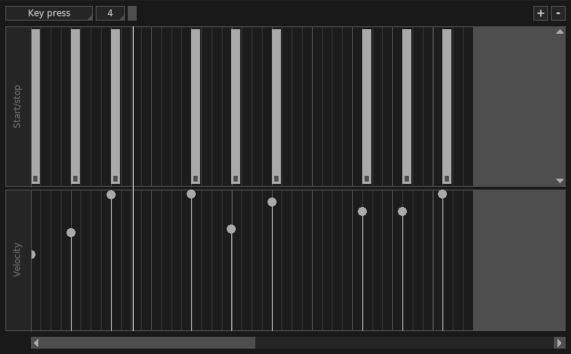
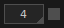
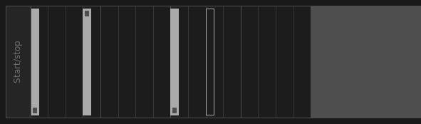
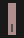
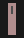
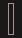
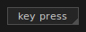
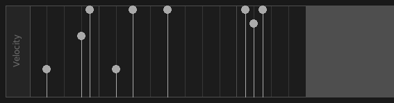
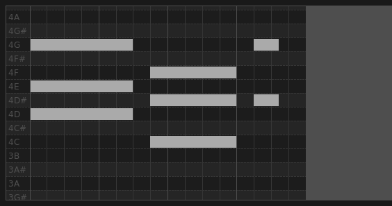
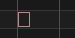

The action editor is a tool for working with actions. Here you can edit existing actions as well as create new ones from scratch. It displays the actions of a channel and is composed of several horizontal widgets, each dedicated to a specific action type.
All widgets work in the same way: you interact with them using the mouse, and you can add, remove, move, or resize actions directly.
| action | effect |
|---|---|
| left click on empty area | add an action |
| right click on action | remove an action |
| left click + drag on action | move or resize the action |
| Ctrl + mouse wheel scroll (Windows and Linux) Cmd + trackpad scroll (macOS) | zoom in/out |
The zoom buttons in the upper-right corner of the window let you zoom in or out across all widgets. The grid tool

displays a visual grid over the beat cells, while the small check button on the right enables snapping.At the moment, the action editor lets you manage the following action types:

The Start/stop widget works only for sample channels set to one shot mode (see the Channels and samples chapter). If you open the editor for a sample channel set to loop mode, the widget is disabled. Actions are represented in different ways:
Key press

— a single key press, usually recorded live with (key);Key release

— a single key release;Stop sample

— a sample stop, usually recorded live with shift + (key);The action type selector

, located in the top-left corner of the Action Editor window, changes the action type that is added when you left-click on an empty area.
Available for both sample channels and MIDI channels, the Velocity widget lets you change the overall volume of an action. On MIDI channels, values range from 0 (silent) to 127 (maximum loudness) to match the value range defined by the MIDI protocol. Each action has a corresponding point in the velocity widget.

Available only for MIDI channels, the Piano Roll widget handles MIDI notes. It represents the full set of 128 notes (0-127) across 11 octaves, ranging from C-1 (or C0) to G9 (or G10).
The piano roll editor can also handle invalid MIDI events, such as two Note On events placed next to each other. These are called orphaned MIDI events and appear as an empty rectangle

with a fixed width. There is not much you can do with an orphaned MIDI event except delete it by right-clicking on it, which is useful for cleaning up a messy MIDI recording.